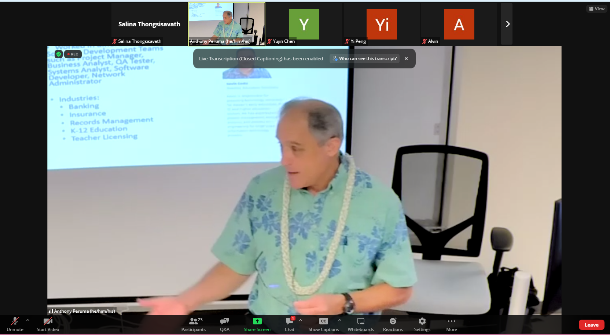

When I attended Kevin Costa’s Tech Industry Guest Talk, I initially thought I would learn about the technical side of software engineering. However, much to my pleasant surprise, Costa’s talk revolved mostly around the crucial non-programming skills for effective teamwork and communication within the field.
Before jumping into the non-programming skills, one technical point that stuck out to me was commenting code. Of course, I had recognized the significance of commenting code way before Costa had mentioned it, but the way Costa had explained it made me rediscover the upmost significance of writing clear and concise comments.
Often times, programmers will work with a variety of people. People who have their own unique style of coding, no background in coding, etc. All of these scenarios just make the value of comments in code more fundamental. Writing well-written comments can save time and effort as programmers will not have to spend a prolonged period of time to understand the code they–or someone else wrote months or years ago. This makes the process of updating a program or debugging a program much quicker.
Additionally, after creating a program for employees to use in a company, programmers must create a technical document that explains the functions of the program so that it can be used effectively by their co-workers. This document then becomes a part of the company library that incoming employees will visit. Well written documents will evade confusion and mistakes.
As important as it is to be a proficient programmer and have a strong understanding of computer science principles, it is also essential to be a team player and be open-minded. Collaborative work is predominant in a work environment, so it is important to actively listen to other team members when discussing. Besides, many minds is better than one!
Another key point that stuck out to me was setting achievable deadlines and goals. Acknowledging problems and realistically creating a timeline to produce the best product is essential when working solo and in a team. Creating a quality output is much more valuable than creating a buggy product in a short amount of time.
Another central point that Costa made was celebrating successes. Often times, people may get so fixated in completing a large end goal that it is easy to disregard the small victories. Just because the main goal has not been completed does not mean that there is no progress being made! People will work better when they are in have a healthy and optimistic mindset, whereas negative thoughts can prevent maximal productivity and make it easy for mistakes to slip by.